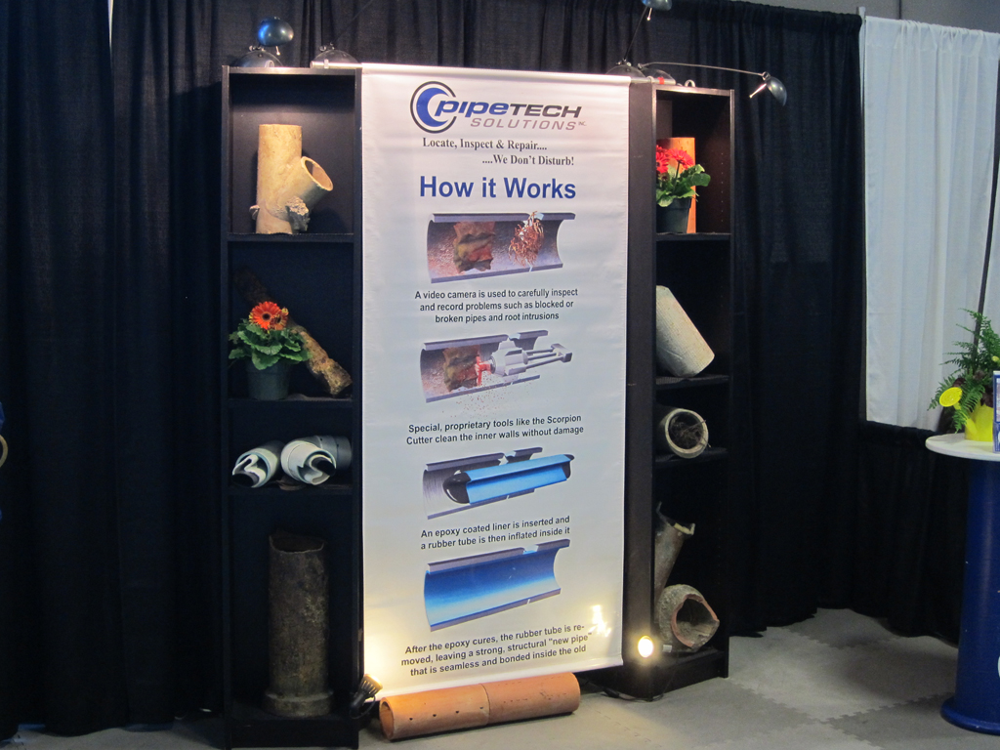
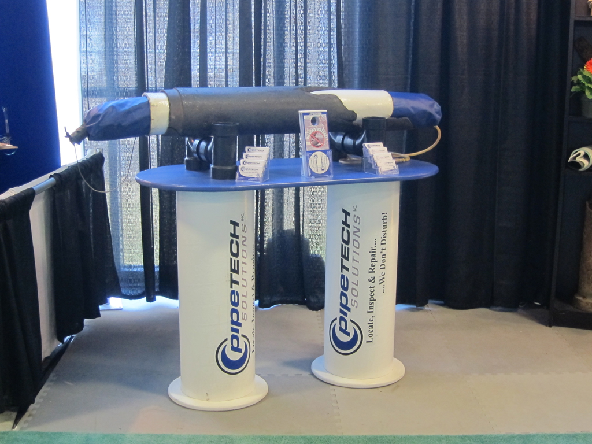
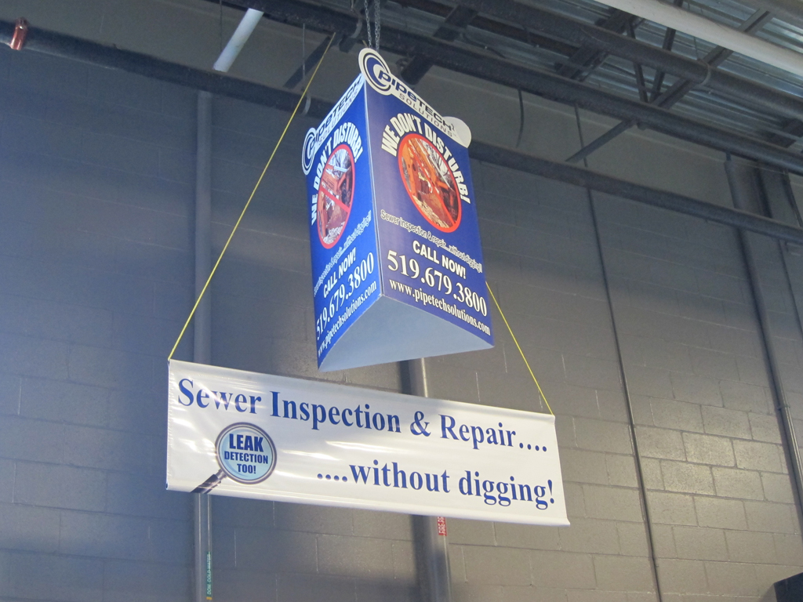
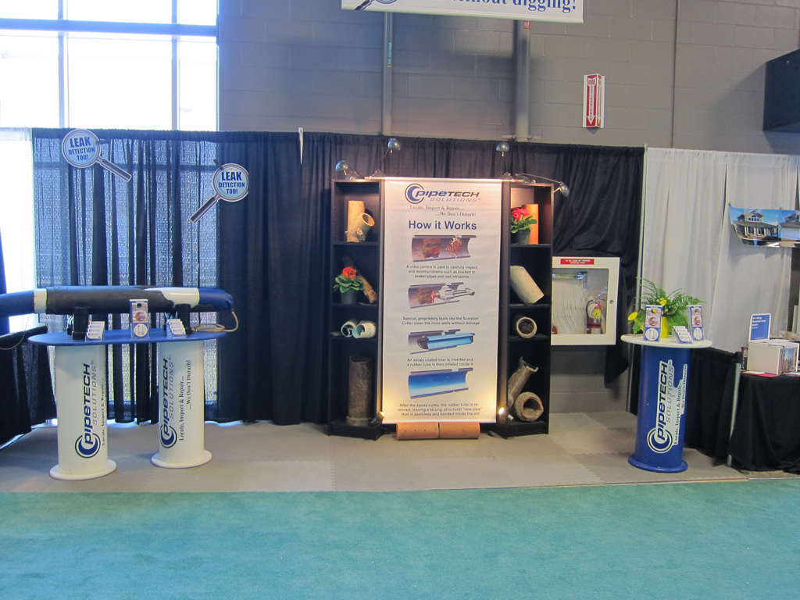

Our Mission Statement
We perform quality, residential and commercial sewer camera video inspections, conduct situational evaluations and will properly clear any blockages with powerful augers. Where appropriate, certain repairs can even be made without digging! That is a permanent solution to roots and other issues, without damage to landscaping or building components. Our expertise also includes underground water leak detection anywhere, especially in swimming pool lines. If it’s leaking we can find it! We are thorough, accurate and professional.
Find PipeTech at tradeshows.
- 
- 
- 
- 